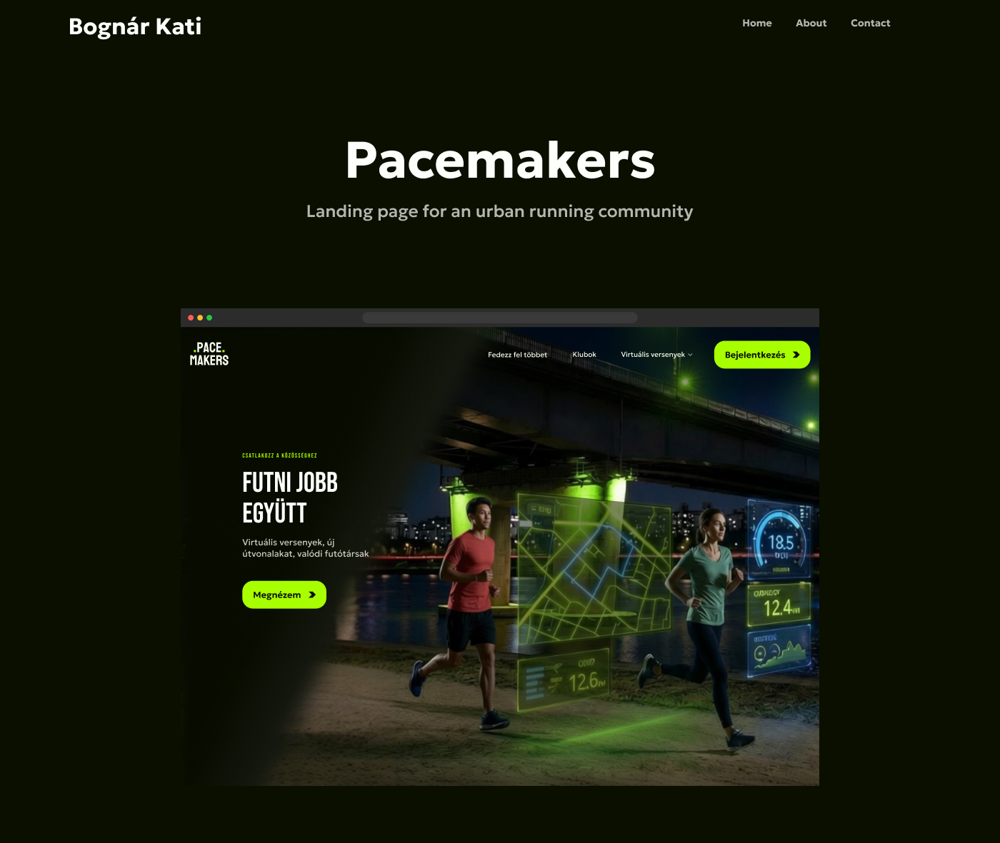
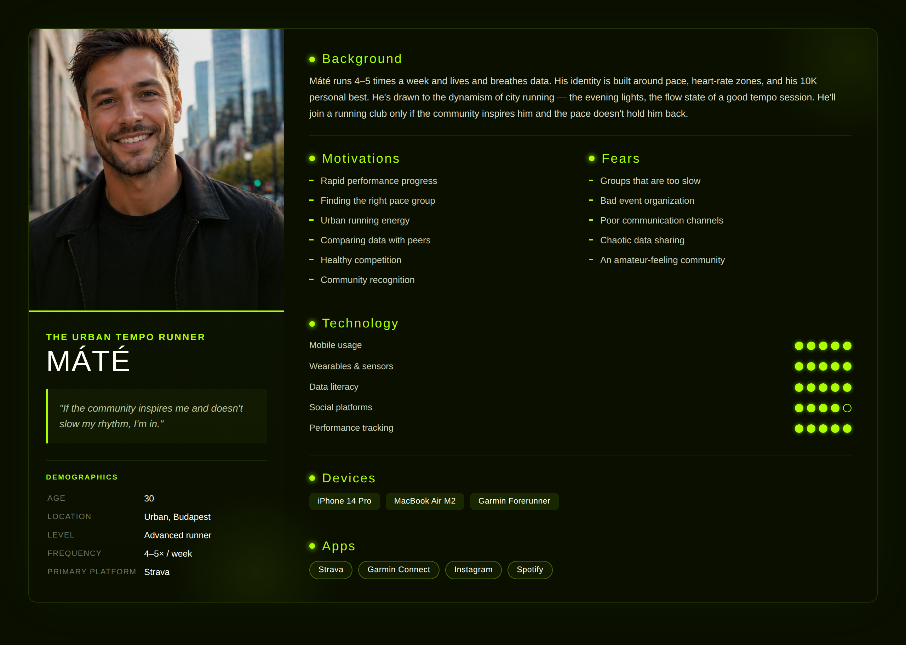
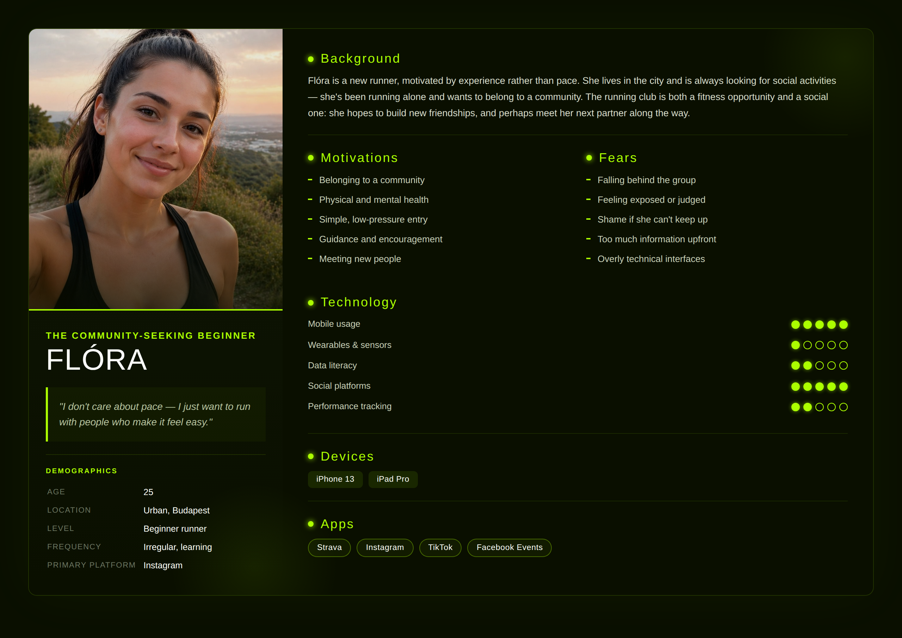
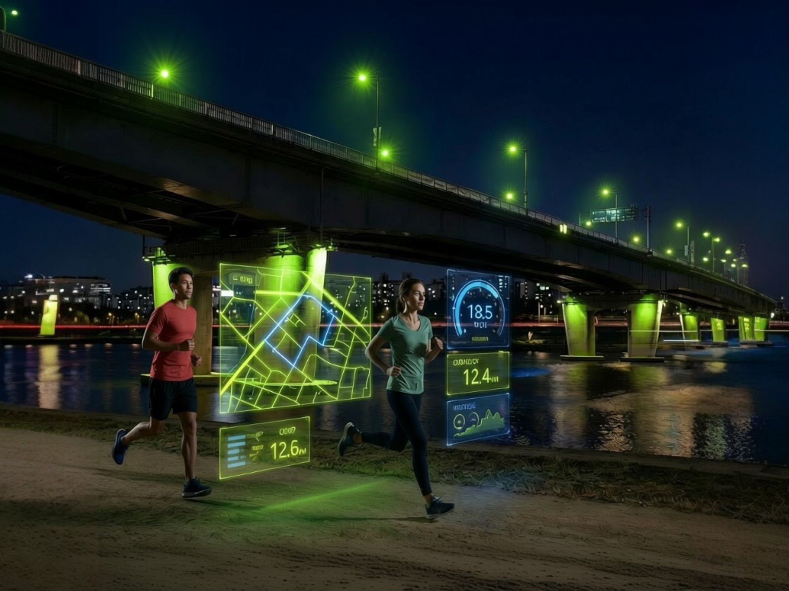
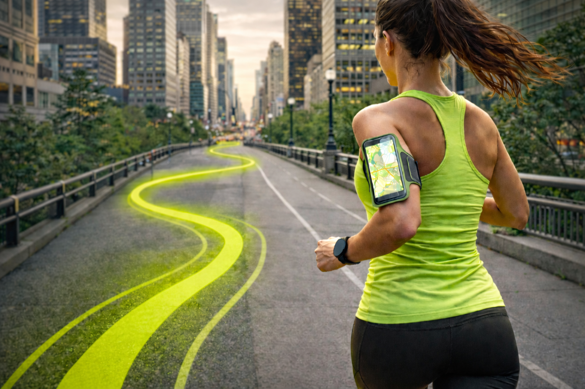
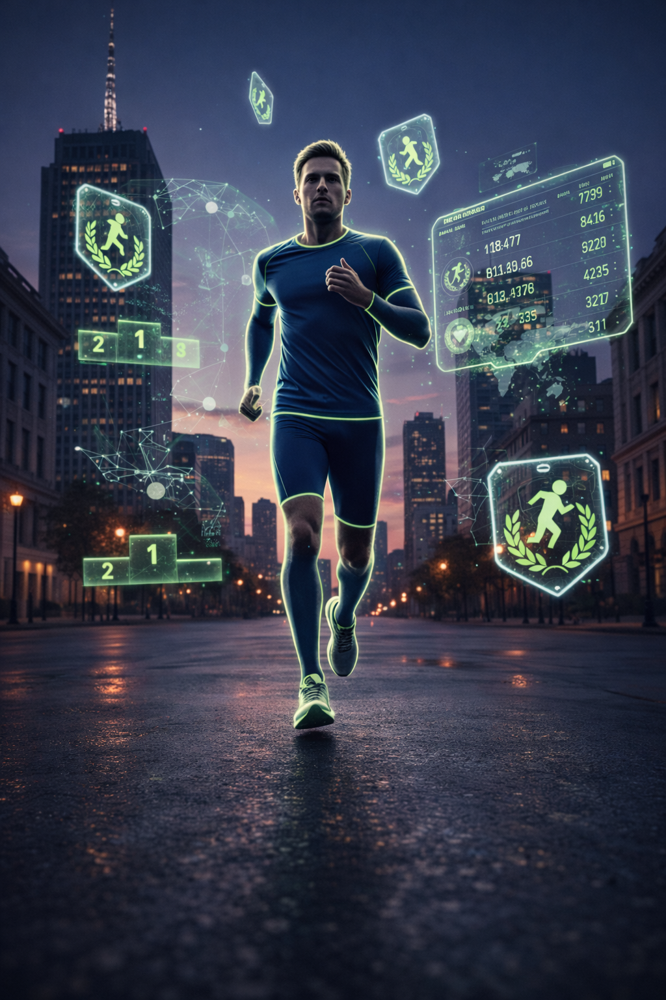
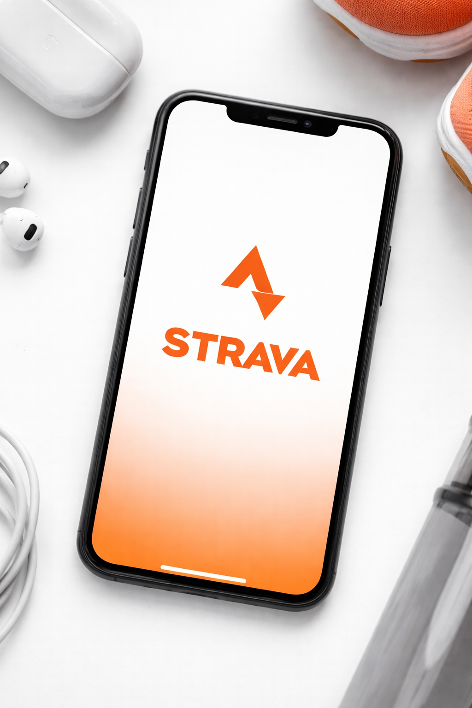

UI Design • Web App
Landing page for an urban running community.

Overview
Pacemakers is a conceptual landing page for an urban running community built around shared city runs, performance data, and collective energy. My very first design project, developed as part of the UI Academy program.
The challenge:
Mentor feedback shaped critical decisions at every stage.
Research was based on the program brief rather than independent interviews. Two primary personas were provided, each representing a distinct archetype within the running community.


Reflection: If revisiting this project, I would conduct independent qualitative research with real runners from both archetypes to validate and deepen these assumptions.
The wireframe and content hierarchy were pre-defined. My role was to translate the brief's strategic direction into clear design intent.
Design principles: Urban energy — the pulse of the city, evening lights, runners in motion; structured, not chaotic. Community strength — every visual reinforces that you're never alone. Inclusive entry, performance-ready depth — beginner and advanced coexist without either feeling like an afterthought. Modern and sporty — athletic and contemporary, no fitness-app clichés.
Reflection: Next time I would revisit the wireframe with a UX lens, questioning whether section order, content priority, and CTA placement truly serve both personas equally.
With structure fixed, ideation focused entirely on visual atmosphere. The conceptual anchor: evening running as a post-work decompression ritual — after sunset, under streetlights, in the neon-lit pulse of the city.
Key decisions: A lime-on-black palette — high-energy contrast that reads as athletic and urban, differentiating from a category dominated by blues, reds, and muted earth tones. AI-generated imagery (Weavy, Nano Banana, ChatGPT) — custom visuals for each section, keeping the lime-glow atmosphere consistent without relying on generic stock photography.
Built in Figma as a single-page desktop landing. Design system highlights — Colour: near-black canvas (#0A0F00), lime signal (#A8FF00), off-white text (#FDFFFA), deep blue (#006AFF) for secondary depth. Typography: Bebas Neue for display (modern, athletic, all-caps), Geologica for body and UI (neutral, legible). Principles: glow and depth, card-based layout for scannability, lime on black as a consistent visual signature.
Black and lime creates high-contrast energy. Blue adds depth for secondary elements.
Display / headlines — modern, athletic, all-caps. “Every run tells a story.”
Body / UI text — neutral and legible.
Light and shadow build the evening-city atmosphere.
Scannable sections, easy to browse at a glance.
A consistent visual signature across the page.
Key Screens




Hero: a bold Bebas Neue headline (“Futni jobb együtt”) with a single lime CTA, over an image of two runners lit by glowing route data — reading as both performance and companionship.
Routes: an immersive full-width image of a runner with a lime-glowing route painted along the city street — one of the most atmospheric moments on the page.
Challenges: a card-based layout that makes events scannable and easy to browse at a glance.
Closing: the Strava integration reinforced with a high-energy full-width design — ending the page on a strong community call to action.
Reflection
Pacemakers taught me how to balance two very different user needs within a single visual language: Máté needed speed and data, Flóra needed warmth and belonging. The challenge was making the design feel welcoming without losing its urban edge.
Key learnings
Atmosphere is a UI decision — colour, light, and imagery carry as much emotional meaning as copy. Typography carries identity — Bebas Neue and Geologica locked in the sporty direction in a way no other pairing would have. Personal instinct is a valid starting point — lived familiarity makes direction feel natural, not speculative. AI-generated imagery is a legitimate design strategy for maintaining visual consistency without stock photos. And wireframes deserve scrutiny — every section order is itself a design decision worth questioning.
What I'd do differently
Return to it with a UX lens first: validate the wireframe against both personas, and conduct independent user research rather than relying solely on the brief. This was my first project — the visual confidence came first; the UX rigor is what I'm building next.